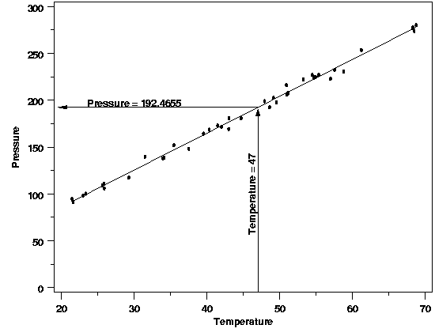
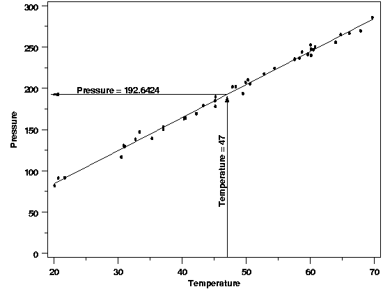

4.1. Introduction to Process Modeling
4.1.3. What are process models used for?
4.1.3.1. |
Estimation |
{kind=link}
{kind=link}


|
4.
Process Modeling
4.1. Introduction to Process Modeling 4.1.3. What are process models used for?
|
|||
| More on Estimation | As mentioned on the preceding page, the primary goal of estimation is to determine the value of the regression function that is associated with a specific combination of predictor variable values. The estimated values are computed by plugging the value(s) of the predictor variable(s) into the regression equation, after estimating the unknown parameters from the data. This process is illustrated below using the Pressure/Temperature example from a few pages earlier. | ||
| Example | Suppose in this case the predictor variable value of interest is a temperature of 47 degrees. Computing the estimated value of the regression function using the equation $$ \hat{P} = 7.749695 + 3.930123T $$ yields an estimated average pressure of 192.4655. | ||
|  | |||
| Of course, if the pressure/temperature experiment were repeated, the estimates of the parameters of the regression function obtained from the data would differ slightly each time because of the randomness in the data and the need to sample a limited amount of data. Different parameter estimates would, in turn, yield different estimated values. The plot below illustrates the type of slight variation that could occur in a repeated experiment. | |||
| Estimated Value from a Repeated Experiment |  | ||
| Uncertainty of the Estimated Value | A critical part of estimation is an assessment of how much an estimated value will fluctuate due to the noise in the data. Without that information there is no basis for comparing an estimated value to a target value or to another estimate. Any method used for estimation should include an assessment of the uncertainty in the estimated value(s). Fortunately it is often the case that the data used to fit the model to a process can also be used to compute the uncertainty of estimated values obtained from the model. In the pressure/temperature example a confidence interval for the value of the regresion function at 47 degrees can be computed from the data used to fit the model. The plot below shows a 99 % confidence interval produced using the original data. This interval gives the range of plausible values for the average pressure for a temperature of 47 degrees based on the parameter estimates and the noise in the data. | ||
| 99 % Confidence Interval for Pressure at T=47 |
|
||
| Length of Confidence Intervals | Because the confidence interval is an interval for the value of the regression function, the uncertainty only includes the noise that is inherent in the estimates of the regression parameters. The uncertainty in the estimated value can be less than the uncertainty of a single measurement from the process because the data used to estimate the unknown parameters is essentially averaged (in a way that depends on the statistical method being used) to determine each parameter estimate. This "averaging" of the data tends to cancel out errors inherent in each individual observed data point. The noise in the this type of result is generally less than the noise in the prediction of one or more future measurements, which must account for both the uncertainty in the estimated parameters and the uncertainty of the new measurement. | ||
| More Info | For more information on the interpretation and computation confidence, intervals see Section 5.1 | ||